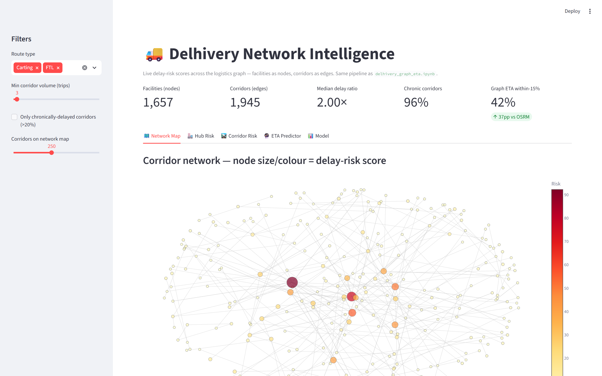

The routing engine (OSRM) underestimates leg time by about 2x: only ~5% of its ETAs land within 15% of actual.
Treat the network as a graph, not a list of routes. Delay propagates through hubs, so each hub's structural role becomes a feature.

Betweenness, degree, clustering and node2vec embeddings per facility feed the ETA model. It is trained twice, with and without graph features, to isolate the lift from network structure.
Each hub scores 0–100: 70% realised SLA breach plus 30% betweenness centrality, so central hubs are flagged even before they show up in breach volume.
Bhiwandi has the highest realised late time, Gurgaon the highest betweenness so its delays ripple network-wide, and Kolkata Dankuni is a chronic eastern chokepoint.
Corridor graph; node size and colour show delay-risk score.
Rank facilities by risk and drill into any hub's corridors.
Find the corridors contributing the most SLA breach.
Pick source and destination, compare the prediction with OSRM.
Baseline vs graph-enhanced model on held-out data.